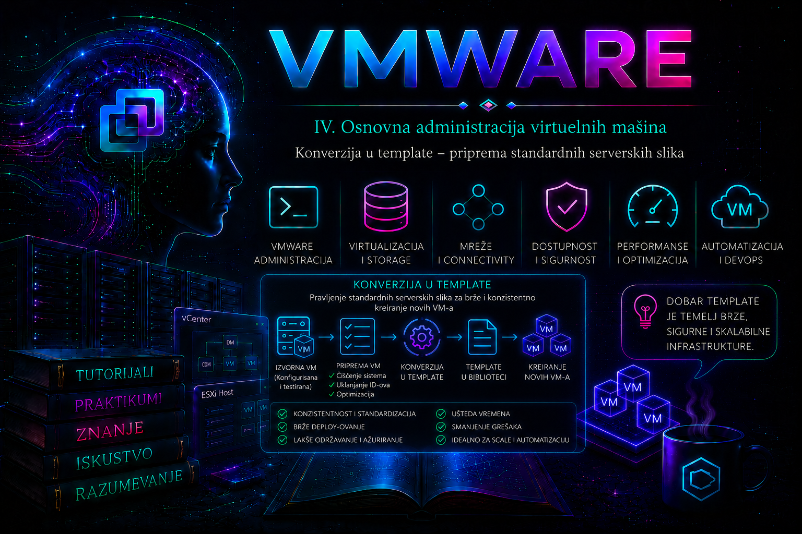

VMware

U prethodnim lekcijama upoznali smo svakodnevne power operacije i snapshot kao kratkotrajnu tačku povratka. Sada prelazimo sa upravljanja pojedinačnim VM-om na kontrolisano umnožavanje standarda. Kada se svaki novi server ručno instalira, razlike u zakrpama, drajverima, bezbednosnim postavkama i agentskom softveru brzo stvaraju konfiguracioni drift. VMware template omogućava da administrator jednom pripremi i proveri referentnu virtuelnu mašinu, a zatim iz nje dosledno implementira nove VM-ove.
Template, međutim, nije samo „ugašena kopija servera”. Njegov kvalitet određuje kvalitet svakog budućeg sistema koji iz njega nastane. Pogrešan DNS, statička IP adresa, iste SSH host ključeve, preostale tajne ili zastarele zakrpe template može preneti na desetine servera. Zato konverzija mora biti završni korak dokumentovanog procesa izrade, generalizacije, bezbednosne provere i validacije serverske slike.
Šta je VMware template i šta nije?
Klasični VM template u vCenter inventaru jeste master kopija konfiguracije i virtuelnih diskova VM-a namenjena implementaciji novih virtuelnih mašina. Posle operacije Convert to Template objekat više nije VM koji se uključuje i koristi za workload. Da bi se njegov sadržaj menjao, klasični template se prvo vraća u VM, održava i testira, a zatim ponovo konvertuje. Ovim objektom upravlja vCenter Server; lokalni ESXi Shell nije odgovarajući interfejs za konverziju inventarnog objekta.
Izraz Golden Image označava organizaciono odobrenu referentnu sliku, a ne poseban tehnički tip VMware objekta. Svaki Golden Image može biti template, ali svaki template nije automatski „zlatan”: taj status mora zaslužiti dokumentovanim sastavom, vlasništvom, bezbednosnim baseline-om, testovima i pravilima održavanja. Template takođe nije backup. Greška ili kompromitovan sadržaj u njemu prenose se na potomke, a njegovo postojanje ne obezbeđuje RPO, retention, nezavisnu kopiju niti dokazano vraćanje podataka.
| Pojam ili objekat | Primarna svrha | Važno ograničenje |
|---|---|---|
| Klasični template u inventaru | Lokalno, ponovljivo kreiranje VM-ova pod upravljanjem vCenter Servera | Za izmenu se obično konvertuje nazad u VM; nema ugrađenu verzijsku istoriju sadržaja |
| VM template u Content Library-ju | Centralizovano upravljanje i verzionisanje VM template-a | Operacije i interoperabilnost zavise od verzije vSphere-a; VM template check-out/check-in lifecycle dostupan je u vSphere 7.0 i novijim izdanjima |
| OVF/OVA template | Prenosiv paket virtuelnog sistema između kompatibilnih okruženja | Nije isto što i nativni VM template; podržane operacije i fidelitet konfiguracije mogu se razlikovati |
| Snapshot | Kratkotrajna tačka povratka tokom kontrolisane promene | Nije standardna slika, klon ni backup; dugotrajno čuvanje povećava operativni rizik |
| Clone | Nezavisna kopija VM-a ili template-a | Bez guest customization-a kopira i identitet i konfiguracione greške izvora |
Poslovna i tehnička vrednost standardne slike
Dobro održavan template skraćuje vreme implementacije, smanjuje ručne greške i omogućava da bezbednosni i operativni minimum budu prisutni od prvog pokretanja. On olakšava automatizaciju kroz vSphere Client, VCF PowerCLI i vSphere API, ali ne ukida potrebu za konfiguracionim menadžmentom. Template obezbeđuje početno stanje; alati kao što su Ansible, Salt ili drugi sistemi za upravljanje konfiguracijom održavaju željeno stanje tokom životnog ciklusa servera.
Organizacija obično održava odvojene slike po podržanoj verziji operativnog sistema, nameni i bezbednosnom profilu, na primer Windows Server 2025, Ubuntu Server 24.04 LTS ili odobrena RHEL verzija. Broj slika ipak treba držati pod kontrolom: previše aplikaciono specifičnih template-a povećava trošak zakrpa, testiranja i povlačenja iz upotrebe. U praksi je često bolji tanji OS baseline, dok se aplikacije i promenljive uloge dodaju automatizacijom posle implementacije.
Arhitektura procesa i podela odgovornosti
Pouzdan image pipeline ima najmanje četiri kontrolne tačke: izgradnju, generalizaciju, objavljivanje i proveru potomka. Tim za operativni sistem odgovara za patch nivo i guest konfiguraciju; VMware tim za virtuelni hardver, VMware Tools, kompatibilnost i smeštaj; bezbednosni tim za hardening i proveru tajni; vlasnik usluge za kriterijume prihvatanja. U manjim okruženjima jedna osoba može obavljati više uloga, ali evidencija odobrenja i dalje mora postojati.
- Izgradnja: instalacija iz pouzdanog izvora, podešavanje virtuelnog hardvera, zakrpa, VMware Tools/open-vm-tools i odobrenih agenata.
- Validacija baseline-a: servisni status, bezbednosna provera, ranjivosti, kompatibilnost i odsustvo neželjenih podataka.
- Generalizacija: uklanjanje ili priprema regeneracije identiteta specifičnog za instancu.
- Objavljivanje: gašenje, konverzija ili check-in, imenovanje, verzija, vlasnik i datum isteka.
- Test implementacija: stvarno kreiranje VM-a, customization i dokaz da je potomak jedinstven, dostupan i usklađen.
Projektovanje referentne virtuelne mašine
Virtuelni hardver i firmware
Pre izgradnje treba izabrati najmanju kompatibilnu verziju virtuelnog hardvera koja ispunjava zahteve ciljnog vSphere okruženja. Najnovija verzija nije automatski najbolja ako template mora da se implementira na starije hostove ili u drugi vCenter. Firmware, UEFI Secure Boot, virtuelni TPM, tip disk kontrolera i mrežni adapter moraju odgovarati podržanom guest OS-u i ciljnoj bezbednosnoj politici. vTPM i enkriptovani VM zahtevaju KMS/native key provider i odgovarajuće privilegije; takvu sliku ne treba uvoditi bez provere prenosivosti i procesa oporavka ključeva.
CPU i memorija u template-u predstavljaju početnu konfiguraciju, a ne univerzalni sizing. Prevelik baseline rasipa resurse, dok premali može onemogućiti prvi boot, zakrpe ili agentski softver. Diskove treba razdvojiti samo kada to donosi operativnu vrednost. Izbor thin ili thick provisioning-a zavisi od storage politike i kasnijeg kapaciteta; template ne štiti datastore od overcommit-a.
Mreža i identitet
Build VM se priključuje samo mreži potrebnoj za izgradnju i testiranje. Produkcionu statičku IP adresu, DNS registraciju i trajno domensko članstvo ne treba „upeći” u opštu sliku. Ciljna port grupa mora postojati i biti dostupna na izabranom hostu ili klasteru. Mapiranje mreže tokom deployment-a i guest customization IP podešavanje dve su različite stvari: prvo povezuje vNIC sa virtuelnom mrežom, a drugo podešava TCP/IP unutar gosta.
VMware Tools i guest alati
VMware Tools, odnosno za podržane Linux distribucije najčešće vendor-isporučeni open-vm-tools, omogućava vCenter-u pouzdaniju vidljivost guest podataka i izvršavanje customization toka. Verziju i running status treba proveriti pre objavljivanja. Monitoring, EDR i backup agent mogu pripadati baseline-u samo ako njihov proizvođač podržava kloniranje i ako se identitet agenta regeneriše pri prvom pokretanju; u suprotnom više servera može biti prikazano kao isti endpoint.
Priprema Windows serverske slike
Windows slika mora imati završene zakrpe bez pending reboot-a, ispravne VMware Tools, usklađen bezbednosni baseline i provereno aktiviranje. Pre generalizacije uklanjaju se lokalni korisnički podaci, instalacioni ostaci, istorije i tajne. Ne treba ručno klonirati računar koji je ostao sa identitetom izvora: kloniranje kopira sistemsko stanje, uključujući Computer SID. Broadcom dokumentacija navodi dve kontrolisane mogućnosti: generalizaciju izvora pomoću Microsoft Sysprep-a pre konverzije ili generisanje novog SID-a kroz Windows VM Customization Specification prilikom implementacije.
Kada se Sysprep pokreće ručno u referentnom VM-u, naredna komanda menja guest stanje i mora se izvršiti iz administratorskog Command Prompt-a tek pošto su svi testovi završeni:
C:\Windows\System32\Sysprep\Sysprep.exe /generalize /oobe /shutdown
Opcija /generalize uklanja informacije specifične za instalaciju, /oobe priprema sledeće pokretanje za odgovarajući setup tok, a /shutdown bezbedno gasi sistem. Posle uspešnog gašenja referentni VM se ne uključuje ponovo pre konverzije, jer bi se proces specijalizacije pokrenuo na izvoru. Neuspeh Sysprep-a dijagnostikuje se prvenstveno u %WINDIR%\System32\Sysprep\Panther\setupact.log i setuperr.log. Komponenta, AppX paket ili pending operacija koja blokira Sysprep mora se rešiti u skladu sa Microsoft podrškom; ponavljanje bez analize loga nije dijagnostika.
Ako se generalizacija prepušta vSphere customization specifikaciji, specifikacija mora eksplicitno generisati novi SID i biti odabrana tokom deployment-a. Ne treba bez dokaza primenjivati oba toka na način koji proizvodi neočekivani OOBE ili iscrpljuje dozvoljeni broj Sysprep rearm operacija. Izbor se dokumentuje i testira na potomku.
Priprema Linux serverske slike
Linux nema jedan univerzalni ekvivalent Sysprep-a. Tačan postupak zavisi od distribucije, init sistema, NetworkManager-a, cloud-init-a i pravila dobavljača agentskog softvera. Cilj nije nasumično brisanje fajlova, već obezbeđivanje da se identitet instance generiše pri prvom boot-u. Posebno se proveravaju /etc/machine-id, SSH host ključevi, DHCP lease-ovi, trajna mrežna pravila, cloud-init stanje, subscription identitet, logske istorije i identifikatori monitoring/backup/EDR agenata.
Sledeći primer je laboratorijski obrazac za systemd distribuciju. Komande menjaju stanje i izvršavaju se sa sudo neposredno pre gašenja; pre produkcije moraju se uskladiti sa dokumentacijom konkretne distribucije. Brisanje celog /var/log stabla nije preporučeno: može ukloniti direktorijume, vlasništva i audit trag potreban za istragu.
# Provera pre promene
cat /etc/machine-id
systemctl is-active vmtoolsd 2>/dev/null || systemctl is-active open-vm-tools
# Promena stanja: priprema regeneracije machine-id vrednosti
sudo truncate -s 0 /etc/machine-id
if [ -e /var/lib/dbus/machine-id ] && [ ! -L /var/lib/dbus/machine-id ]; then
sudo rm -f /var/lib/dbus/machine-id
fi
sudo ln -sfn /etc/machine-id /var/lib/dbus/machine-id
# Promena stanja: uklanjanje host ključeva samo ako ih distribucija
# automatski regeneriše pri sledećem pokretanju
sudo rm -f /etc/ssh/ssh_host_*
# Bezbedno gašenje posle završene generalizacije
sudo shutdown -h now
Ako se koristi cloud-init, njegova podržana cleanup komanda ima prednost nad ručnim brisanjem keša. Dostupne opcije zavise od verzije; zato se najpre izvršava read-only provera cloud-init clean --help. Primer ispod menja stanje i prikladan je samo kada je cloud-init stvarno deo dizajna prvog pokretanja:
cloud-init --version
cloud-init clean --help
sudo cloud-init clean --logs --machine-id
Pre uklanjanja SSH host ključeva administrator mora dokazati da ih izabrana distribucija ili cloud-init ponovo stvara. Posle deployment-a novi fingerprint se upoređuje sa izvorom. Subscription/entitlement identitet RHEL sistema, waagent, cloud provider alati i treći agentski softver čiste se isključivo vendor-podržanim postupkom.
Podaci koji nikada ne pripadaju opštem template-u
- privatni ključevi korisnika, API tokeni, cloud credentials i lozinke u skriptama;
- produkcioni sertifikati sa privatnim ključem, osim kada postoji strogo odobren specifičan slučaj;
- statička IP adresa, hostname i DNS registracija izvornog servera;
- jedinstveni agent ID, backup identitet ili hardkodovani CMDB identifikator;
- osetljivi logovi, shell istorija, privremeni export-i baza i korisnički podaci;
- aktivno domensko članstvo izvora, osim ako Microsoft-ov i organizacioni proces izričito podržava takav image workflow.
Preduslovi i privilegije za konverziju
Klasična konverzija zahteva da je VM ugašen, da se njime upravlja kroz vCenter Server i da nalog ima odgovarajuće privilegije nad izvornim VM-om i ciljnim folderom. Tačna RBAC prava zavise od operacije i verzije, pa se u produkciji koristi namenski role sa najmanjim privilegijama, a ne trajni administratorski nalog. Pre promene proveravaju se tekući taskovi, snapshot-i, backup poslovi, alarmi, datastore kapacitet, VMware Tools status i vlasništvo nad slikom.
Template zadržava virtuelne diskove na datastore-u; konverzija sama po sebi nije migracija niti dodatna zaštitna kopija. Ako je izvor šifrovan, koristi vTPM ili storage politiku, ciljna infrastruktura mora moći da čita njegove ključeve i zadovolji politiku. Budući deployment zahteva kapacitet, kompatibilan host, dostupnu mrežu i pravo dodele resursa.
Konverzija klasičnog VM-a u template
- Potvrditi da je build završen, da nema pending reboot-a i da je odobren zapis o verziji.
- Prikupiti dokaze: guest OS/build, patch datum, Tools status, virtuelni hardver, mrežu, diskove, alarme i rezultate bezbednosnog skena.
- Izvršiti podržanu guest generalizaciju i bezbedno ugasiti VM.
- U vSphere Client-u izabrati ugašeni VM, zatim Actions > Template > Convert to Template. Naziv menija može se neznatno razlikovati između izdanja klijenta.
- Pratiti Recent Tasks i Events, potvrditi uspešan završetak i da je objekat prikazan kao template.
- Odmah sprovesti test deployment u izolovanu mrežu. Sama promena ikonice nije dokaz da je serverska slika ispravna.
Važno: in-place konverzija menja tip inventarnog objekta. Ako je neophodno zadržati build VM radi paralelnog testiranja ili brze zamene verzije, razmotriti Clone to Template umesto konverzije, uz dovoljan datastore kapacitet i jasno upravljanje dvema kopijama.
Deployment VM-a i Guest OS Customization Specification
U vSphere Client-u se nad template-om bira New VM from This Template. Čarobnjak određuje ime i inventory lokaciju, compute resurs, datastore/storage policy, mrežu i opcije kloniranja. CPU, memorija i diskovi mogu se prilagoditi kada workflow i kompatibilnost to dozvoljavaju. Ako se odabere Customize the operating system, vCenter primenjuje postojeću VM Customization Specification.
Specifikacija može automatizovati hostname, mrežne parametre, DNS, vremensku zonu i, prema guest OS-u, Windows identitet i domain/workgroup parametre. VMware Tools u gostu učestvuje u customization toku. Lozinke i domain credentials ne treba ugrađivati u dokumentaciju ili skripte; koriste se zaštićeni mehanizmi i najmanje privilegovan nalog namenjen domain join-u. Pre masovne upotrebe specifikacija se testira za tačnu verziju gosta i proverava da li statički IP pool, DNS i port grupa odgovaraju ciljnom segmentu.
Status se proverava u vCenter taskovima i događajima, kroz VMware Tools podatke i unutar gosta. Korisni guest logovi zavise od OS-a i Tools verzije; na Linux-u treba pregledati /var/log/vmware-imc/toolsDeployPkg.log kada postoji, kao i cloud-init journal/logove, dok Windows troubleshooting uključuje VMware customization i Sysprep logove. Uvek se korelišu isti vremenski period, vCenter task i prvi boot potomka.
Održavanje i verzionisanje template-a
Klasični template se ažurira tako što se konvertuje u VM, priključi kontrolisanoj maintenance mreži, pokrene, zakrpi, testira, ponovo generalizuje i konvertuje. Direktno „krpljenje” bez test deployment-a nije završen lifecycle. Bezbedniji produkcioni obrazac je immutable image: iz poznatog izvora izgraditi novu verziju, testirati je, objaviti paralelno sa prethodnom, preusmeriti nove deployment-e, a staru povući tek po isteku rollback perioda.
Naziv treba da bude stabilan i mašinski čitljiv, na primer tmpl-rhel9-web-2026.07.1, dok annotations/tags ili CMDB čuvaju owner-a, build pipeline, OS build, patch datum, Tools verziju, hardening profil, datum isteka i status candidate, approved, deprecated ili retired. Ne oslanjati se samo na naziv. Period održavanja zavisi od politike ranjivosti i vendor patch ciklusa; kritična ranjivost može zahtevati vanrednu novu verziju.
Content Library VM template
U vSphere 7.0 i novijim izdanjima VM template u Content Library-ju podržava check-out, izmenu i check-in nove verzije. Time se dobija kontrolisanija istorija od klasičnog inventory template-a. Check-out stvara radni VM; administrator menja i validira sadržaj, a check-in objavljuje novu verziju sa opisom promene. I dalje su potrebni testovi, kontrola privilegija, kapacitet biblioteke i plan za sinhronizaciju. Subscribed Content Library može distribuirati sadržaj, ali kompatibilnost, storage i mrežno mapiranje na odredištu moraju se zasebno potvrditi.
VCF PowerCLI administracija
VMware PowerCLI cmdlet-i danas se isporučuju u okviru VCF PowerCLI porodice modula; postojeće VMware.VimAutomation.Core komande i dalje se koriste za vSphere operacije. Sledeće komande izvršavaju se iz PowerShell sesije sa instaliranim odgovarajućim modulom. Povezivanje i read-only inventarne provere ne menjaju VM, dok Set-VM, Set-Template i New-VM menjaju stanje.
# Interaktivno povezivanje; u automatizaciji koristiti bezbedan credential store
Connect-VIServer -Server 'vcsa.lab.local'
# Read-only: pronalaženje tačno jednog izvornog VM-a i provera stanja
$sourceVm = Get-VM -Name 'build-ubuntu-2404'
$sourceVm | Select-Object Name, PowerState, NumCpu, MemoryGB, Version
Get-Snapshot -VM $sourceVm -ErrorAction SilentlyContinue
Get-VMGuest -VM $sourceVm | Select-Object State, OSFullName, HostName
# State-changing: dozvoliti samo za ugašen i jednoznačno pronađen VM
if ($sourceVm.PowerState -ne 'PoweredOff') {
throw 'VM mora biti ugašen pre konverzije u template.'
}
$template = Set-VM -VM $sourceVm -ToTemplate -Confirm:$true
$template | Select-Object Name, Id
Interaktivni -Confirm:$true čuva kontrolnu tačku. U pipeline-u potvrda se može isključiti tek kada su pre-check, approval i audit trag automatizovani. Za vraćanje template-a u VM koristi se state-changing cmdlet:
$template = Get-Template -Name 'tmpl-ubuntu-2404-2026.07.1'
$maintenanceHost = Get-VMHost -Name 'esxi01.lab.local'
$maintenanceVm = Set-Template -Template $template `
-ToVM `
-VMHost $maintenanceHost `
-Confirm:$true
$maintenanceVm | Select-Object Name, PowerState, VMHostNovi VM iz template-a kreira se sa eksplicitno razrešenim objektima, čime se izbegava slučajno podudaranje imena. Primer menja stanje, troši datastore kapacitet i još ne uključuje guest customization:
$template = Get-Template -Name 'tmpl-ubuntu-2404-2026.07.1'
$vmHost = Get-VMHost -Name 'esxi01.lab.local'
$datastore = Get-Datastore -Name 'Datastore01'
$portGroup = Get-VirtualPortGroup -Name 'LAB-SERVER' -VMHost $vmHost
$newVm = New-VM -Name 'lab-web01' `
-Template $template `
-VMHost $vmHost `
-Datastore $datastore `
-DiskStorageFormat Thin `
-Confirm:$true
Get-NetworkAdapter -VM $newVm | Set-NetworkAdapter `
-Portgroup $portGroup `
-StartConnected:$true `
-Confirm:$true
Start-VM -VM $newVm -Confirm:$true
Get-VM -Name 'lab-web01' | Select-Object Name, PowerState, VMHostPregled svih template-a je read-only operacija:
Get-Template |
Sort-Object Name |
Select-Object Name, Id, @{N='Datastore';E={($_ | Get-Datastore).Name}}
Komanda Get-VM | Select-Object Name, Version ne dokazuje iz kog je template-a VM nastao; polje Version označava verziju virtuelnog hardvera. Ako je lineage potreban, upisati tag, custom attribute ili CMDB zapis u samom deployment workflow-u. To je važna ispravka česte, ali pogrešne pretpostavke.
vSphere API i automatizacija
Za veću skalu koriste se podržani vSphere Automation API/SDK i idempotentan pipeline: resolve objekata, validacija, kreiranje taska, praćenje stanja, timeout, obrada greške i post-check. API poziv koji vrati HTTP uspeh ili task ID nije završni dokaz; task mora dostići uspešno terminalno stanje, a zatim se proveravaju inventar i testni VM. Tajne se preuzimaju iz secret manager-a, servisni nalog ima minimalna prava, a svaki build dobija korelacioni ID i audit zapis.
Najčešći kvarovi i sistematična dijagnostika
| Simptom | Verovatna oblast uzroka | Dokaz i bezbedna korekcija |
|---|---|---|
| Opcija Convert to Template nije dostupna | VM je uključen, objekat nije pod odgovarajućim vCenter upravljanjem, task je aktivan ili nedostaje privilegija | Proveriti PowerState, Recent Tasks, upravljački endpoint i effective permissions; ne menjati prava naslepo |
| Deployment ne može da izabere host ili datastore | Nekompatibilan virtuelni hardver, nedostupna storage politika, nedovoljno prostora ili encryption/key provider problem | Pročitati compatibility poruku i task event; proveriti kapacitet, policy compliance i dostupnost ključeva |
| VM se kreira, ali customization ostaje pending ili failed | VMware Tools ne radi, specifikacija ne odgovara guest OS-u, mreža/DNS nisu dostupni ili Sysprep/cloud-init nije uspeo | Korelirati vCenter Events sa Tools, Sysprep, toolsDeployPkg i cloud-init logovima; prvo ispraviti uzrok, zatim ponoviti na novom testnom klonu |
| Dva potomka imaju isti identitet ili SSH fingerprint | Izostavljena ili neuspešna generalizacija | Izolovati pogođene VM-ove, regenerisati identitet vendor-podržanim postupkom i trajno popraviti image pipeline |
| Novi VM nema mrežu | Pogrešna port grupa/VLAN, adapter nije connected ili guest IP specifikacija ne odgovara segmentu | Odvojeno proveriti vNIC mapiranje i guest TCP/IP; ne menjati oba sloja istovremeno bez hipoteze |
| Agent prikazuje više VM-ova kao jedan endpoint | Jedinstveni ID agenta kloniran iz template-a | Izolovati potomke prema proceni rizika, primeniti vendor cleanup/re-registration i dodati test jedinstvenosti u pipeline |
Dijagnostika počinje određivanjem simptoma, obima i posledice: da li je problem u samoj konverziji, kloniranju, prvom boot-u, guest customization-u ili aplikacionom bootstrap-u. Zatim se čuvaju vCenter task ID, Events, vreme operacije, korišćeni template i customization spec. Tek posle toga formira se hipoteza i proveravaju guest logovi. Privremeni workaround može biti ručna mrežna konfiguracija izolovanog testnog VM-a, ali trajna mera mora ispraviti template ili pipeline; ručno popravljanje svakog potomka samo prikriva osnovni uzrok.
Praktikum – izrada, konverzija, implementacija i održavanje template-a
Laboratorijska topologija i početno stanje
vCenter: vcsa.lab.local
ESXi host: esxi01.lab.local
Datastore: Datastore01
Port grupa: LAB-SERVER (izolovana ili neprodukciona)
Build VM: build-ubuntu-2404
Template: tmpl-ubuntu-2404-2026.07.1
Test VM: lab-web01Potreban je vCenter nalog sa pravima za pregled, konverziju, kreiranje VM-a, dodelu mreže i power operacije, guest administratorski nalog, PowerShell sa VCF PowerCLI modulima i konzolni pristup. Rizik je srednji: generalizacija menja identitet build VM-a, konverzija menja tip objekta, a deployment troši storage. Vežba se izvodi samo u laboratorijskoj ili odobrenoj maintenance zoni. Pre početka evidentirati postojeći snapshot/backup status i slobodan kapacitet; snapshot se ne koristi kao zamena za backup.
Vežba 1 – inventar i pre-flight validacija
Cilj: dokazati da je izvor spreman pre bilo kakve promene. U vSphere Client-u otvoriti Summary, Monitor > Tasks and Events, Snapshots i Edit Settings. Zabeležiti guest OS, Tools status, hardware version, firmware, kontrolere, mrežu, diskove i storage policy. Potvrditi da nema aktivnog backup-a, konsolidacije ili reconfiguration taska.
Connect-VIServer -Server 'vcsa.lab.local'
$vm = Get-VM -Name 'build-ubuntu-2404'
$vm | Select-Object Name, PowerState, NumCpu, MemoryGB, Version, VMHost
Get-VMGuest -VM $vm | Select-Object State, OSFullName, HostName, IPAddress
Get-NetworkAdapter -VM $vm | Select-Object Name, NetworkName, ConnectionState
Get-HardDisk -VM $vm | Select-Object Name, CapacityGB, StorageFormat
Get-Snapshot -VM $vm -ErrorAction SilentlyContinue
Get-VIEvent -Entity $vm -MaxSamples 30 |
Select-Object CreatedTime, UserName, FullFormattedMessageSve komande su read-only. Očekivani rezultat je tačno jedan build VM, poznata konfiguracija i odsustvo neočekivanih snapshot-a ili aktivnih grešaka. Ako ime vraća više objekata ili je Tools status nepoznat, vežba se zaustavlja: prvo se jednoznačno određuje objekat i popravlja vidljivost.
Vežba 2 – generalizacija i konverzija
Cilj: pripremiti Linux instancu da na sledećem boot-u dobije jedinstven identitet. U guest-u proveriti politike distribucije za machine-id, SSH i cloud-init, zatim primeniti samo odgovarajući cleanup iz ranijeg odeljka. Zabeležiti originalni machine-id i SSH fingerprint u laboratorijsku evidenciju, ali ih ne objavljivati kao tajnu van kontrolisanog sistema.
cat /etc/os-release
cat /etc/machine-id
sudo ssh-keygen -lf /etc/ssh/ssh_host_ed25519_key.pub
systemctl status vmtoolsd --no-pager 2>/dev/null || true
cloud-init status --long 2>/dev/null || true
Posle odobrenog cleanup-a ugasiti VM. U vSphere Client-u primeniti Actions > Template > Convert to Template ili izvršiti PowerCLI blok sa Set-VM -ToTemplate. Očekivani rezultat je uspešan task i template objekat koji nije moguće uključiti kao običan VM. Ako task ne uspe, sačuvati poruku i task ID; ne ponavljati promenu pre provere PowerState-a, prava i konkurentnih taskova.
Vežba 3 – testni deployment i dokaz jedinstvenosti
Cilj: dokazati da template proizvodi funkcionalan i jedinstven VM, a ne samo da se može klonirati. Implementirati lab-web01 na Datastore01 i LAB-SERVER, po potrebi uz prethodno testiranu Linux customization specifikaciju. Uključiti VM i pratiti Tasks/Events, Tools status i prvi boot.
# Izvršava se u novom testnom VM-u
hostnamectl
cat /etc/machine-id
ip -brief address
ip route
getent hosts vcsa.lab.local
sudo ssh-keygen -lf /etc/ssh/ssh_host_ed25519_key.pub
systemctl is-active vmtoolsd 2>/dev/null || systemctl is-active open-vm-tools
cloud-init status --long 2>/dev/null || trueKriterijum uspeha je: novi hostname i mrežni identitet odgovaraju planu; machine-id i SSH fingerprint razlikuju se od izvora; VMware Tools radi; DNS i gateway test prolaze; nema customization greške u vCenter Events i relevantnim guest logovima. Ako nema SSH host ključa, koristiti konzolu, potvrditi da li servis/distribucija treba da ga generiše i primeniti vendor-podržanu regeneraciju; ne kopirati ključ iz template-a.
Vežba 4 – kontrolisana greška i troubleshooting
Cilj: naučiti razdvajanje virtuelne mreže od guest customization-a. Bez menjanja template-a, na testnom klonu isključiti opciju Connected na vNIC-u ili ga povezati na laboratorijsku port grupu bez uplink-a. Ovo je reverzibilna laboratorijska simulacija; ne koristiti produkcioni VLAN.
- Zabeležiti simptom: nema mrežne veze; obim: samo
lab-web01; posledica: nedostupan testni servis. - U Events proveriti vreme poslednje reconfiguration operacije i ko ju je izvršio.
- Read-only proverom
Get-NetworkAdapter -VM 'lab-web01'utvrditi port grupu i connection state. - U guest konzoli proveriti
ip -brief addressiip route. Time se potvrđuje da li je kvar ispod ili unutar gosta. - Vratiti adapter na
LAB-SERVER, uključiti Connected i Connect at power on, zatim ponoviti DNS i gateway test.
Neposredni uzrok je pogrešno stanje/mapiranje vNIC-a; osnovni uzrok u realnom incidentu može biti pogrešan deployment parametar ili nedovoljna validacija pipeline-a. Privremena korekcija je vraćanje adaptera, a trajna mera validacija dozvoljenih port grupa pre kreiranja VM-a. Kriterijum završetka je obnovljena veza i dokumentovan Events trag promene.
Vežba 5 – održavanje i rollback nove verzije
Cilj: simulirati bezbedan mesečni image lifecycle. Klasični template konvertovati u maintenance VM ili, za Content Library VM template, izvršiti check-out. Primeniti jednu bezbednu laboratorijsku zakrpu, ponovo sprovesti pre-check i generalizaciju, a zatim objaviti novu verziju tmpl-ubuntu-2404-2026.07.2. Staru verziju ne brisati dok nova ne prođe test deployment i dogovoreni rollback period.
Ako nova verzija ne prođe test, zaustaviti njenu upotrebu, označiti je kao rejected i nastaviti deployment sa prethodno odobrenom verzijom. To je rollback na nivou image kataloga; ne pokušava se „vraćanje” već kreiranih produkcionih servera konverzijom template-a. Posle uspeha ukloniti laboratorijski lab-web01 kroz vCenter uz potvrdu da nije produkcioni objekat, vratiti privremene mrežne izmene i zatvoriti change zapis.
Administratorske prakse
- Template tretirati kao verzionisan proizvod sa vlasnikom, odobrenjem, datumom isteka i dokazima testiranja.
- Graditi novu verziju iz pouzdanih izvora; ne održavati beskonačan lanac ručnih izmena bez reproduktivnog zapisa.
- Odvojiti OS baseline od aplikacione konfiguracije kada time smanjujemo broj slika i konfiguracioni drift.
- Koristiti najmanje privilegije, izolovanu build mrežu, secret manager i auditabilne servisne naloge.
- Ne unositi jedinstvene identitete, statičke adrese, privatne ključeve i agentske ID vrednosti u opšti template.
- Svaku verziju proveriti stvarnim deployment-om; uspešna konverzija nije test operativnog sistema.
- Meriti starost zakrpa, prolaznost deployment-a, vreme izrade i broj povučenih slika; alarmirati na istek ili kritičnu ranjivost.
- Čuvati prethodnu odobrenu verziju tokom rollback perioda i povlačiti stare verzije kontrolisano, uz proveru zavisnih pipeline-a.
- Lineage potomka upisivati u tag/custom attribute/CMDB tokom deployment-a; ne zaključivati ga iz hardware version polja.
- Za Content Library proveravati sinhronizaciju, verziju vSphere-a, dostupnost sadržaja i kompatibilnost ciljnog okruženja.
Završna kontrolna tačka
Lekcija je savladana kada administrator može da:
- razlikuje klasični inventory template, Content Library VM template, OVF/OVA, clone, snapshot i Golden Image;
- projektuje minimalan, kompatibilan i bezbedan OS baseline bez jedinstvenih podataka instance;
- objasni i bezbedno sprovede Windows ili Linux generalizaciju uz odgovarajuće logove i rollback plan;
- konvertuje VM u template kroz vSphere Client ili PowerCLI i dokaže uspeh taskom i inventarnim stanjem;
- implementira testni VM, mapira mrežu, primeni guest customization i dokaže jedinstvenost identiteta;
- razdvoji kvar konverzije, kloniranja, virtuelne mreže, VMware Tools-a, Sysprep/cloud-init-a i aplikacionog bootstrap-a;
- održava verzije slike, zadrži proverenu prethodnu verziju i izvrši kontrolisano povlačenje zastarelog template-a;
- dokumentuje lineage, vlasništvo, patch nivo, bezbednosni status i rezultate prihvatnih testova.
Zaključak
Konverzija u template tehnički je kratka operacija, ali pouzdana standardna serverska slika nastaje kroz mnogo širi lifecycle: kontrolisanu izgradnju, kompatibilan virtuelni hardver, zakrpe, VMware Tools, bezbednosni baseline, generalizaciju, zaštitu tajni, objavljivanje verzije i obavezni test potomka. Template ubrzava implementaciju samo kada je njegov sadržaj pouzdan; u suprotnom ubrzava širenje greške.
Odgovoran administrator zato ne pita samo „da li je VM pretvoren u template”, već „iz kog izvora je slika izgrađena, ko ju je odobrio, kako dokazujemo jedinstvenost potomka, kada ističe i na koju proverenu verziju se vraćamo”. Takav način razmišljanja priprema nas za sledeću lekciju, u kojoj VM premeštamo između resursa i proveravamo kompatibilnost pre migracije.